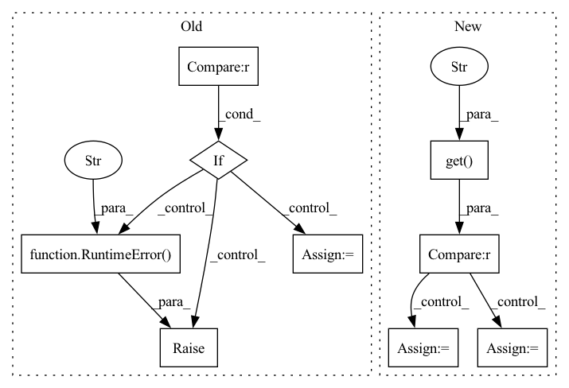

Pattern ID :39300
Before Change
Compute the number of training steps for each epoch.
if self._num_training_steps is None:
if self.trainer.train_dataloader is None :
try:
dataloader = self.train_dataloader()
except NotImplementedError:
raise RuntimeError(
"To use linear warmup cosine annealing lr"
"set the dataloader with .set_loaders(...)"
)
dataset_size = getattr(self, "dali_epoch_size", None) or len(dataloader.dataset)
dataset_size = self.trainer.limit_train_batches * dataset_sizeAfter Change
if self._num_training_steps is None:
try:
dataset = self.extra_args.get("dataset" , None)
if dataset not in ["cifar10", "cifar100", "stl10"] :
folder = os.path.join(self.extra_args["data_dir"], self.extra_args["train_dir"])
else:
folder = None
no_labels = self.extra_args.get("no_labels", False)
data_fraction = self.extra_args.get("data_fraction", -1.0)
In pattern: SUPERPATTERN
Frequency: 3
Non-data size: 9
Instances Fragment ID: 111525413
Project Name: vturrisi/contrastive-learning
Commit Name: eb07a9c7c2872efb1ae83767f59a67fa616a7652
Time: 2022-05-02
Author: vt.turrisi@gmail.com
File Name: solo/methods/linear.py
M Class Name: LinearModel
N Class Name: LinearModel
M Method Name: num_training_steps(1)
N Method Name: num_training_steps(1)
M Parent Class: pl.LightningModule
N Parent Class: pl.LightningModule
M File Name: solo/methods/linear.py
N File Name: solo/methods/linear.py
M Start Line: 199
M End Line: 208
N Start Line: 184
N End Line: 206
Before Change
Compute the number of training steps for each epoch.
if self._num_training_steps is None:
if self.trainer.train_dataloader is None :
try:
dataloader = self.train_dataloader()
except NotImplementedError:
raise RuntimeError(
"To use linear warmup cosine annealing lr"
"set the dataloader with .set_loaders(...)"
)
dataset_size = getattr(self, "dali_epoch_size", None) or len(dataloader.dataset)
dataset_size = self.trainer.limit_train_batches * dataset_sizeAfter Change
if self._num_training_steps is None:
try:
dataset = self.extra_args.get("dataset" , None)
if dataset not in ["cifar10", "cifar100", "stl10"] :
folder = os.path.join(self.extra_args["data_dir"], self.extra_args["train_dir"])
else:
folder = None
no_labels = self.extra_args.get("no_labels", False)
data_fraction = self.extra_args.get("data_fraction", -1.0)
Fragment ID: 111525429
Project Name: vturrisi/contrastive-learning
Commit Name: eb07a9c7c2872efb1ae83767f59a67fa616a7652
Time: 2022-05-02
Author: vt.turrisi@gmail.com
File Name: solo/methods/base.py
M Class Name: BaseMethod
N Class Name: BaseMethod
M Method Name: num_training_steps(1)
N Method Name: num_training_steps(1)
M Parent Class: pl.LightningModule
N Parent Class: pl.LightningModule
M File Name: solo/methods/base.py
N File Name: solo/methods/base.py
M Start Line: 383
M End Line: 392
N Start Line: 362
N End Line: 384
Before Change
self.engine = self._initialize_engine()
def __call__(self, *args, **kwargs) -> BaseModel:
if "engine_inputs" in kwargs :
raise ValueError(
"invalid kwarg engine_inputs. engine inputs determined "
f"by {self.__class__.__qualname__}.parse_inputs"
)
// parse inputs into input_schema schema if necessary
pipeline_inputs = self.parse_inputs(*args, **kwargs)
if not isinstance(pipeline_inputs, self.input_schema):
raise RuntimeError(
f"Unable to parse {self.__class__} inputs into a "
f"{self.input_schema} object. Inputs parsed to {type(pipeline_inputs)}"
)
// run pipeline
engine_inputs: List[numpy.ndarray] = self.process_inputs(pipeline_inputs)
if isinstance(engine_inputs, tuple):
engine_inputs, postprocess_kwargs = engine_inputs
else:
postprocess_kwargs = {}
After Change
def __call__(self, *args, **kwargs) -> Union[BaseModel, Future]:
_default_key_val = ("_DEFAULT",)
executor = kwargs.get("executor" , _default_key_val)
if executor is _default_key_val : // do not use ==
// use executor created during initialization
executor = self.executor
else:
// use passed in executor
executor = kwargs.pop("executor")
return (
executor.submit(self._run, *args, **kwargs) // Non-Blocking call Fragment ID: 111525444
Project Name: neuralmagic/deepsparse
Commit Name: 0d5c3a33d87a0ea19e8071168517d5761d5f54bb
Time: 2022-07-28
Author: george@neuralmagic.com
File Name: src/deepsparse/pipeline.py
M Class Name: Pipeline
N Class Name: Pipeline
M Method Name: __call__(1)
N Method Name: __call__(1)
M Parent Class: ABC
N Parent Class: ABC
M File Name: src/deepsparse/pipeline.py
N File Name: src/deepsparse/pipeline.py
M Start Line: 160
M End Line: 194
N Start Line: 179
N End Line: 193